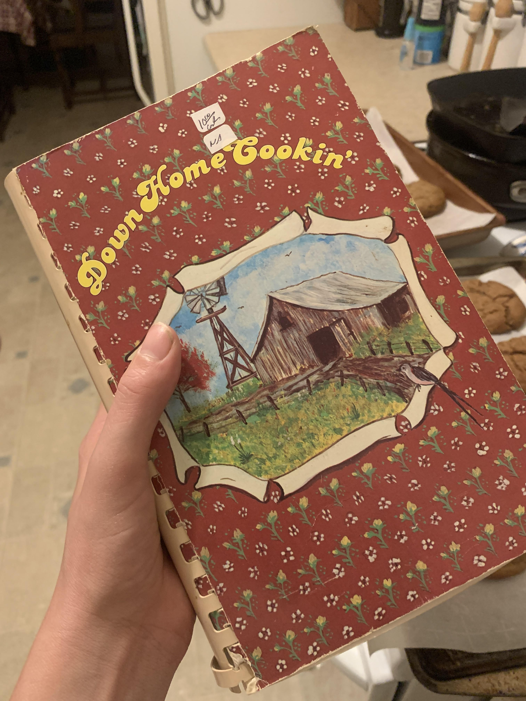

These cookies are absolutely amazing. Soft and chewy, with just the right amount of crunch. I found the recipe in an old 1984 cookbook from Grady County, Oklahoma. Which happens to be where my gramma and dad's family are from! The recipe was originally written by Hattie Orr.
This recipe makes about 4 dozen 2 1/2 inch cookies.
Mix thoroughly, sift together and stir in the following:
Chill dough for about 30-45 minutes. Roll into balls the size of large walnuts. Dip tops with white granulated sugar. Place sugar side up, 3 inches apart on parchment paper. Spray each cookie with a bit of water, or 3 drops of water per cookie, in order to create a cracked surface.
Bake until just set in 375 F ovenfor 10-12 minutes.
